Estimates of temporary employment
In this exercise, we will recreate an ONS labour market estimate published online in the table EMP07 Temporary Employees. Currently, this table is updated four times a year in February, May, August and November using the Quarterly Labour Force Survey (QLFS).
Learning outcomes:
- To become more familiar with QLFS datasets.
- To become familiar with producing weighted population estimates
- To understand how some ONS estimates are produced
Data
The data used in this exercise relates to an estimate published by the ONS for October-December 2024.
To follow the exercise, you need to access the relevant dataset from the UK Data Service: SN 9349: Quarterly Labour Force Survey, October - December, 2024.
Get set-up
We suggest that you create a folder named LFS_exercises as the working directory for this exercise – where syntax files and other materials will be stored. After downloading the data, save it in an easily accessible location within LFS_exercises, such as a subfolder named Data. It is recommended to download the data in SPSS format, for better handling of missing values.
We can now open the QLFS dataset from the File menu:

Inspect the dataset and find out the number of cases and variables by scrolling down the list of cases and variables, respectively in Data and Variables view.
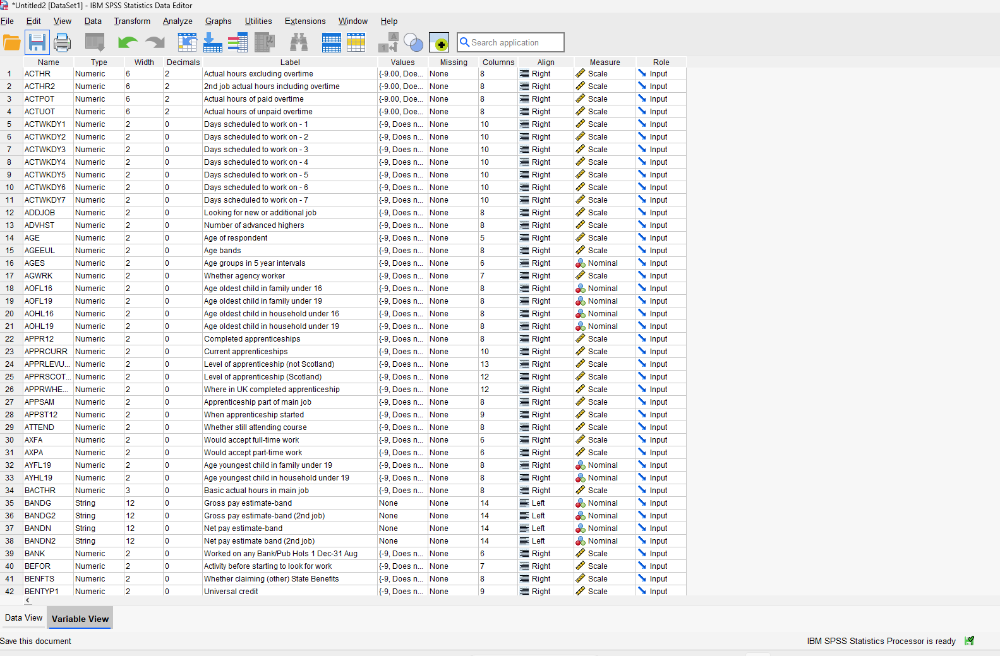
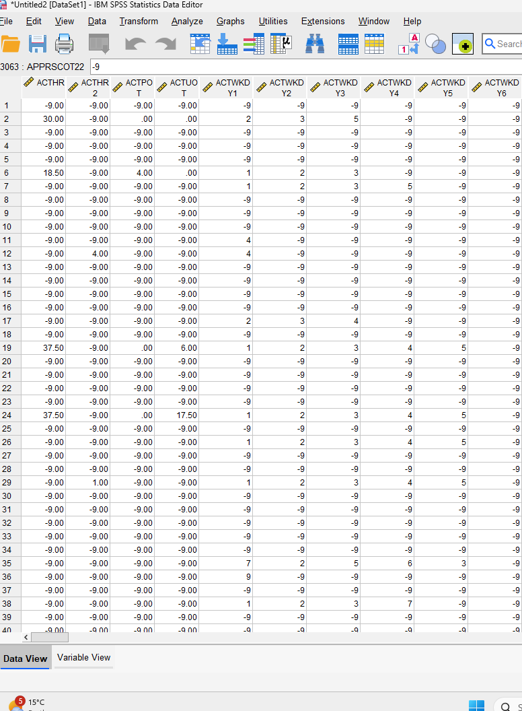
How many variables are there?
There are 803 variables in the dataset.
From now on, we will be using syntax rather than the pull-down menus.
As there are many variables in the dataset, let’s just keep those we are going to use in this exercise.
SAVE OUTFILE='dataex1.sav'
/KEEP= PERSNO PWT24 JBTP101 FTPT INECAC05 JOBTYP SEX.
GET FILE='dataex1.sav'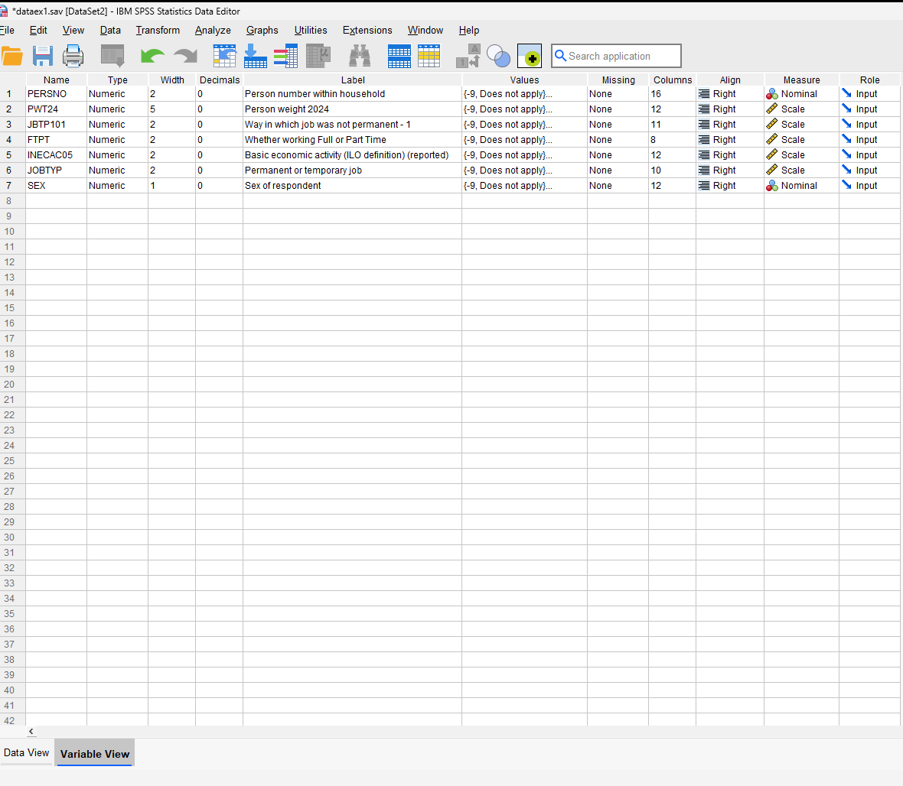
Examine the variables
We already looked at the raw data in the Data View tab. Since we know we are dealing with categorical variables, we can just examine their frequency distribution.
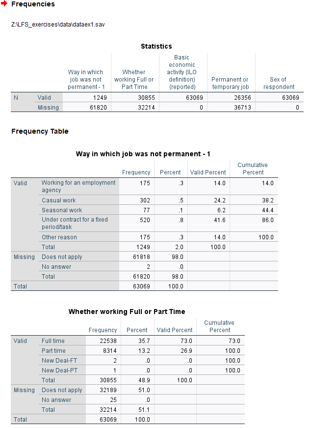
}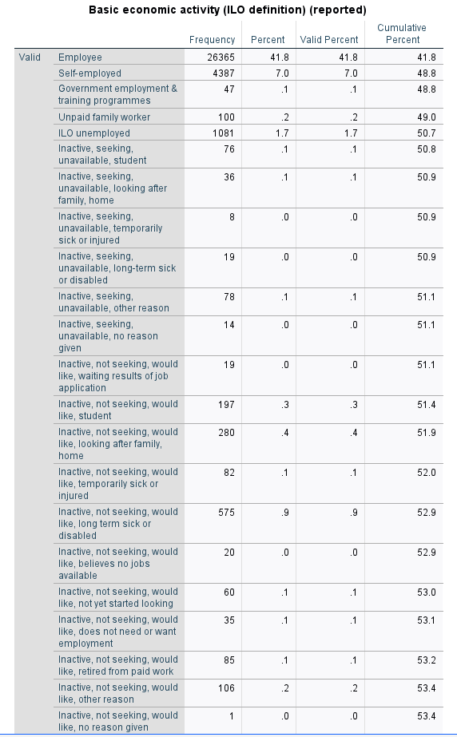
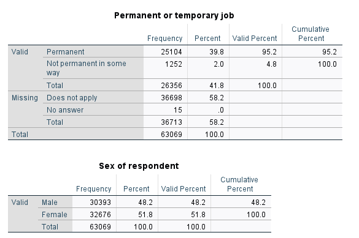
How many cases are there?
What does the variable
INECAC05relate to?Why are there many missing cases on the variables:
JBTP101,FTPTandJOBTYP?
There are 63,069 cases
INECAC05records self-reported basic economic activity (ILO definition)Respondents not in employment are coded as missing values for these variables. Missing values were recorded as -9 “Does not apply” and -8 “No answer” in the original data.
Weighted and unweighted frequencies
In order to provide reliable estimates of population values, survey data needs to be weighted when analysed. Weights are variables whose values increase or decrease the relative importance of observations, depending on how likely respondents were to take part to the survey. Some weights are only designed to correct the relative importance of observations, whereas others in addition also enable calculating population totals - the latter are called grossing weights.
Below, we compare weighted and unweighted frequencies and percentages.
Let us first examine again the variable measuring whether respondents work in a temporary job or not - JOBTYP. In order to avoid issues further down the line, we are going to create a new variable where missing values (ie -9 -8) are coded as system missing. We will call it JobTmp.
IF (JOBTYP = 1) JobTmp = 0 .
IF (JOBTYP = 2) JobTmp = 1.
* Set to system missing if JOBTYP is -8 or -9.
RECODE JOBTYP (-8=SYSMIS) (-9=SYSMIS).
EXECUTE.
* Create the variable label
VARIABLE LABELS JobTmp "Whether main job is temporary".
... And the value labels
VALUE LABELS JobTmp
0 "Not temporary"
1 "Temporary".
* Crosstabulation with missing values shown.
CROSSTABS
/TABLES=JobTmp BY JOBTYP
/MISSING=INCLUDE.
FREQUENCIES VARIABLES=JobTmp
/FORMAT=DFREQ
/ORDER=ANALYSIS.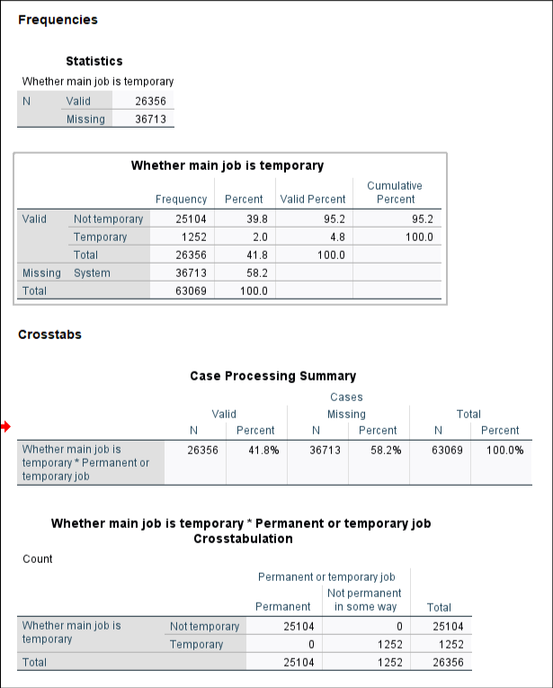
We then declare the data to be weighted survey data:
* Removing missing data on the weights variable
* In order to avoid error messages
SELECT IF (NOT MISSING(PWT24) & PWT24>0).
* Applying weights
WEIGHT BY PWT24.… And compute the weighted totals and percentages:
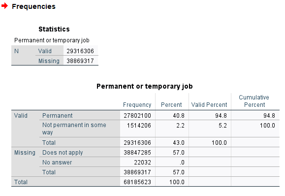
Review questions
Do the frequencies change noticeably when the weight is applied?
Using the code we used to create
JobTmpabove as guide, create a variable to indicate those working part time and examine their weighted and unweighted frequencies. You are going to need this variable later.
Yes, the frequencies change quite a lot once we apply the weights — they become much higher. This is because the weights in the Labour Force Survey (LFS) are designed to sum to known population totals. That makes it easier to estimate overall population values like totals, means, and proportions.
The LFS weights also account for the survey’s sample design: individuals who had a lower chance of being selected are given higher weights to correct for that. They also help adjust for different levels of non-response across subgroups in the population, which means the results are more likely to reflect the population accurately.
The syntax below computes a variable recording whether respondents work part-time or not and produce weighted frequency tables.
FREQUENCIES VARIABLES=FTPT /ORDER=ANALYSIS.
* Recode FTPT into new variable PartTime.
RECODE FTPT (1 3=0) (2 4=1) (-8 -9=SYSMIS) INTO PartTime.
VARIABLE LABELS PartTime "Whether main job is part-time".
VALUE LABELS PartTime 0 "Not part-time" 1 "Part-time".
EXECUTE.
* Label variable and values.
FREQUENCIES VARIABLES=PartTime
/FORMAT=DFREQ
/ORDER=ANALYSIS.
WEIGHT BY PWT24.
FREQUENCIES VARIABLES=PartTime
/FORMAT=DFREQ
/ORDER=ANALYSIS.
WEIGHT OFF.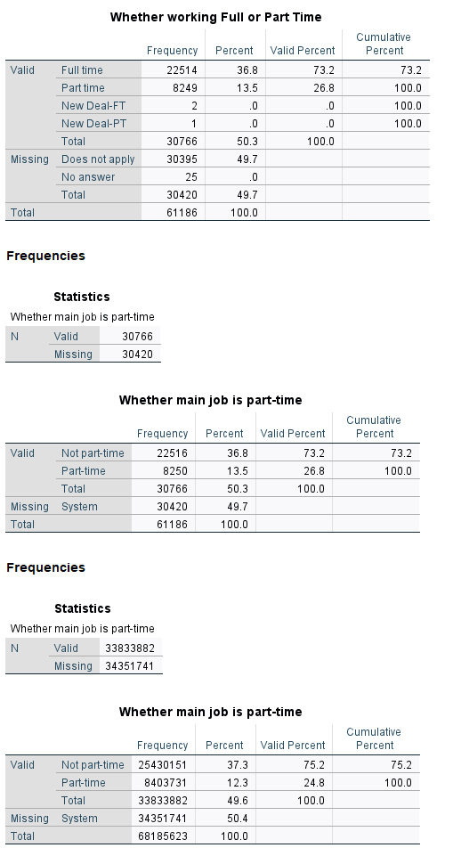
Splitting by sex and working time status
We can obtain the percentages of full-time and part-time employees by job tenure, by creating a contingency table:
WEIGHT BY PWT24.
* Crosstab to check result.
CROSSTABS
/TABLES=PartTime BY JobTmp
/MISSING=INCLUDE.
WEIGHT OFF.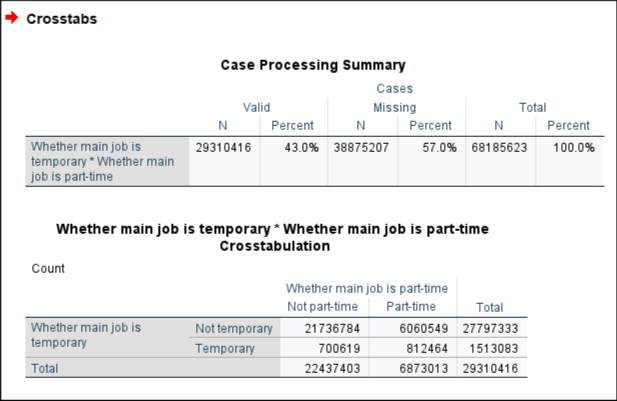
We can simultaneously examine the number of temporary and part-time employees by gender:
* Split the dataset by SEX.
SORT CASES BY SEX.
SPLIT FILE LAYERED BY SEX.
WEIGHT BY PWT24.
* Crosstab of JobTmp by PartTime within each SEX group.
CROSSTABS
/TABLES=JobTmp BY PartTime
/MISSING=INCLUDE.
* Turn off split file to resume normal processing.
SPLIT FILE OFF.
WEIGHT OFF.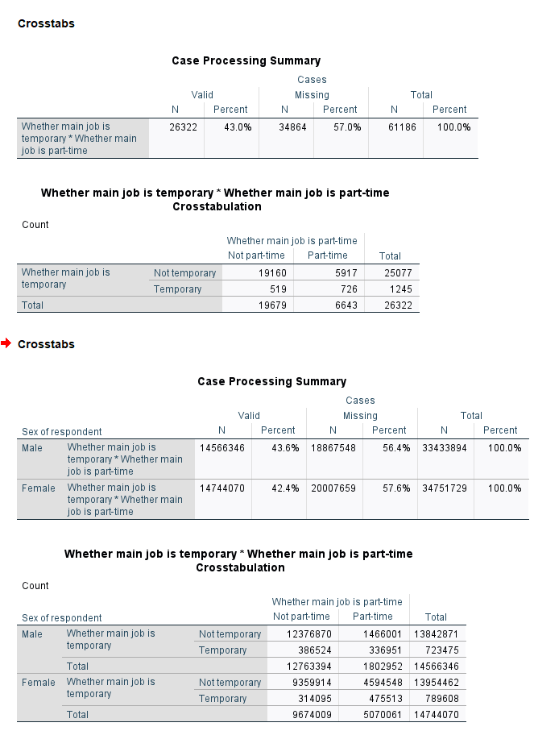
Review questions
How many people are temporary employees (all and part-time) in this quarter?
How many females are in part-time temporary employment?
How can we find out the number of applicable cases for men in part-time temporary employment - ie the number of cases in the sample used to calculate the population counts?
There are 1,513,083 temporary employees, of which 812,464 part-time.
There are 475,513 females in part-time temporary employment
In order to get the number of applicable cases, we need to look at the unweighted frequencies of SEX by JobTmp by PartTime. The number of (unweighted) valid cases for this analysis is only 288 respondents.
Note: You can check if your results match those in the ONS EMP07 dataset.